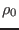
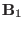
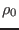
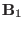

Next: Plasma displacement vector Up: Notes on linear ideal Previous: Summary of resistive MHD
Next, consider the linearized version of the ideal MHD equations. Use
,
 , , and  to denote the equilibrium
fluid velocity, magnetic field, plasma pressure, and mass density,
respectively. Use
,
,
, , and  to denote the equilibrium
fluid velocity, magnetic field, plasma pressure, and mass density,
respectively. Use
,
,  , and to
denote the perturbed fluid velocity, magnetic field, plasma pressure, and mass
density, respectively. Consider only the case that there is no equilibrium
flow, i.e.,
. From Eq. (21), the linearized
equation for the time evolution of the perturbed pressure is written as
, and to
denote the perturbed fluid velocity, magnetic field, plasma pressure, and mass
density, respectively. Consider only the case that there is no equilibrium
flow, i.e.,
. From Eq. (21), the linearized
equation for the time evolution of the perturbed pressure is written as
| (26) |